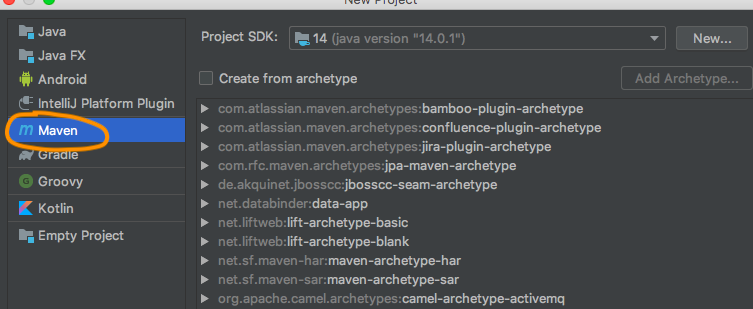

Open IntelliJ --> New Project --> Create a Maven Project.

Now double click on POM.XML and add Cucumber dependencies.
<dependency> <groupId>io.cucumber</groupId> <artifactId>cucumber-java</artifactId> <version>5.5.0</version> </dependency> <dependency> <groupId>io.cucumber</groupId> <artifactId>cucumber-junit</artifactId> <version>5.5.0</version> <scope>test</scope> </dependency> <dependency> <groupId>io.cucumber</groupId> <artifactId>cucumber-core</artifactId> <version>5.5.0</version> </dependency> <dependency> <groupId>io.cucumber</groupId> <artifactId>gherkin</artifactId> <version>13.0.0</version> </dependency> <dependency> <groupId>org.seleniumhq.selenium</groupId> <artifactId>selenium-java</artifactId> <version>3.141.59</version> </dependency>
Once all dependencies are downloaded then my Libraries will look like below.
Now My POM.XML is like below.
<?xml version="1.0" encoding="UTF-8"?> <project xmlns="http://maven.apache.org/POM/4.0.0" xmlns:xsi="http://www.w3.org/2001/XMLSchema-instance" xsi:schemaLocation="http://maven.apache.org/POM/4.0.0 http://maven.apache.org/xsd/maven-4.0.0.xsd"> <modelVersion>4.0.0</modelVersion> <groupId>com.maven.cucumbertest</groupId> <artifactId>com.maven.cucumbertest</artifactId> <version>1.0-SNAPSHOT</version> <dependencies> <dependency> <groupId>io.cucumber</groupId> <artifactId>cucumber-java</artifactId> <version>5.5.0</version> </dependency> <dependency> <groupId>io.cucumber</groupId> <artifactId>cucumber-junit</artifactId> <version>5.5.0</version> <scope>test</scope> </dependency> <dependency> <groupId>io.cucumber</groupId> <artifactId>cucumber-core</artifactId> <version>5.5.0</version> </dependency> <dependency> <groupId>io.cucumber</groupId> <artifactId>gherkin</artifactId> <version>13.0.0</version> </dependency> <dependency> <groupId>org.seleniumhq.selenium</groupId> <artifactId>selenium-java</artifactId> <version>3.141.59</version> </dependency> </dependencies> </project>